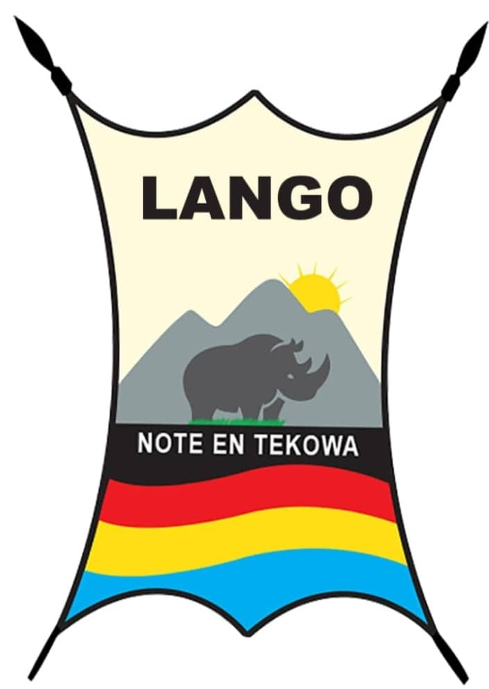
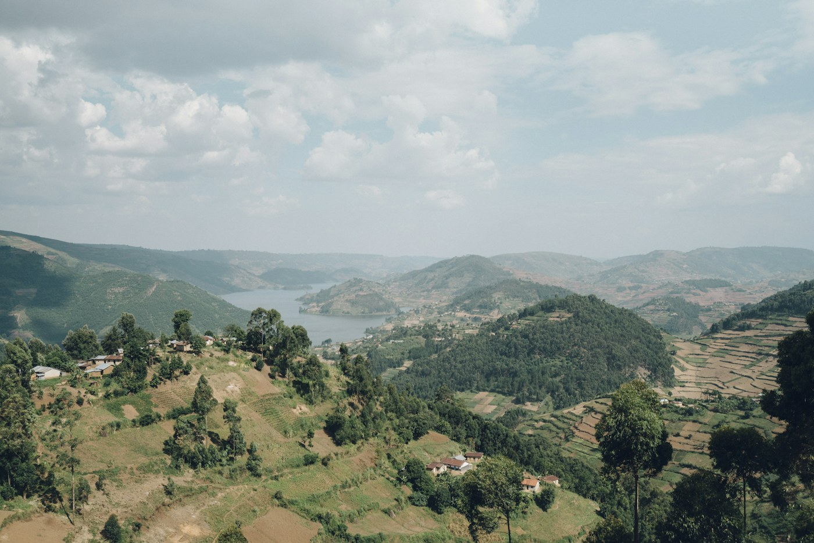
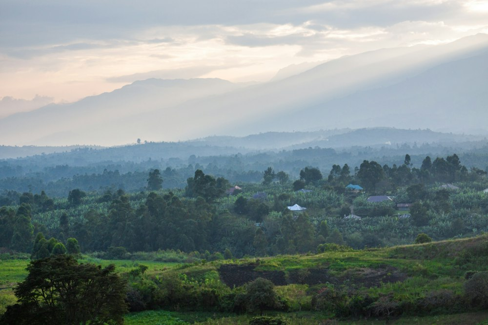
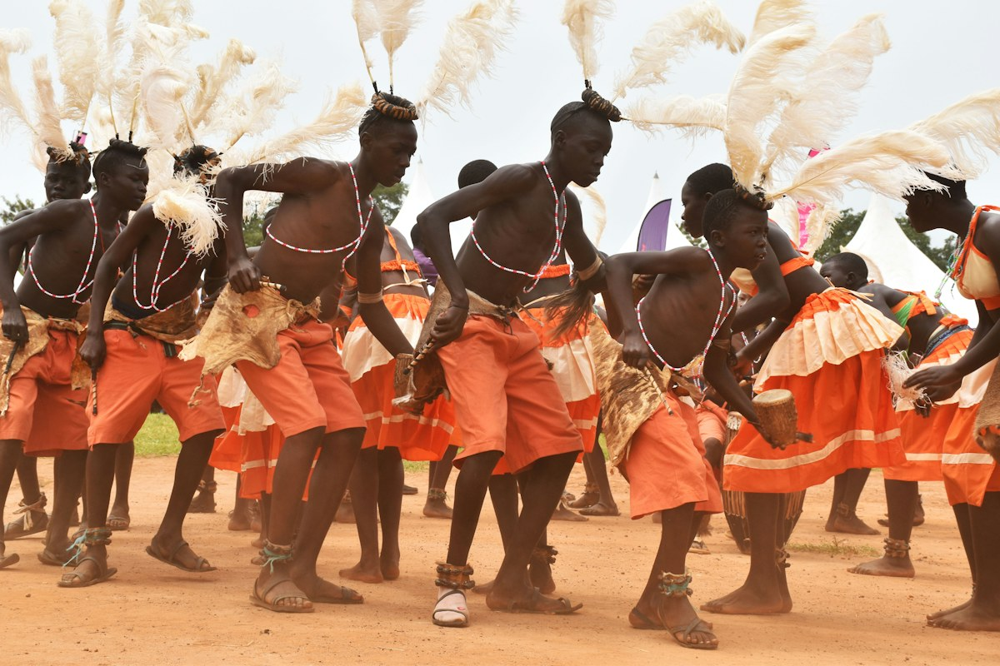
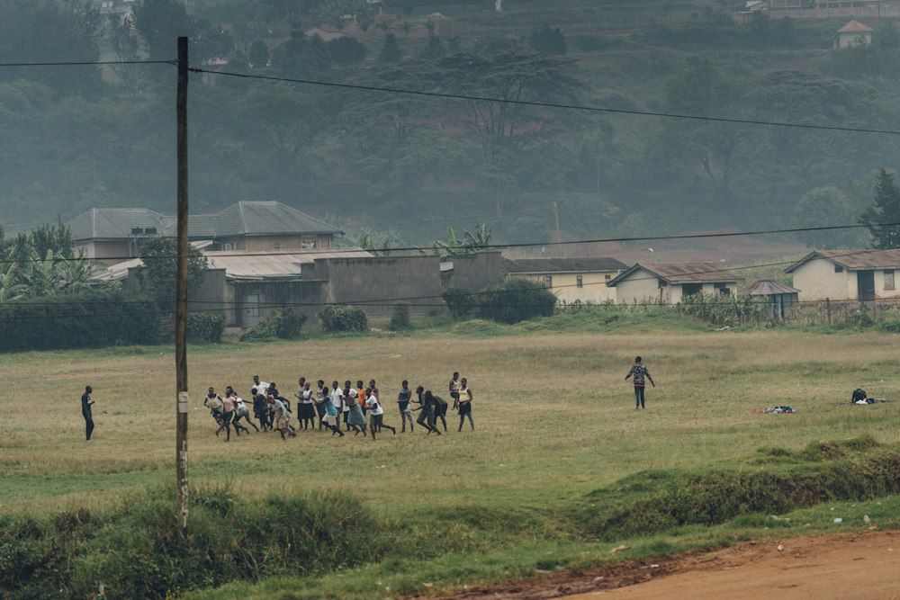

Preserve
Protect language, oral history and cultural knowledge for generations to come.

TEKWARO ME LANGOA living heritage, shared forward
Discover the stories, knowledge and aspirations of the Lango people. A place to remember where we come from—and imagine what we can become.

Location not verified.
Replace with an approved local photo.
A home for our stories
01 — 04It is the knowledge we carry, the language we speak, the values we share—and the future we choose to build together.
Tekwaro me Lango is a digital home for the heritage and contemporary life of the Lango people of Northern Uganda. It brings generations together to preserve, learn and share.
The story of LangoOur heritage is our foundation.
Our identity is our strength.
Our future is our responsibility.
Where our story begins
Explore the histories, ancestry and foundations of Lango identity—grounded in community knowledge and careful research.

LANDSCAPE · LOCATION NOT VERIFIEDOur origins
Learn about Lango history, ancestry, clans, traditional leadership and oral traditions. This space will bring together community accounts and documented research, with each source clearly identified.
Explore the archiveHistorical details await review by elders, cultural custodians and researchers.
Many threads, one heritage
A language lives when we use it
Leb Lango connects generations and carries knowledge, humour and ways of seeing the world. Help build a welcoming place for language learning and sharing.
Share a language resourceKnowledge in every voice
Oral histories make space for elders, storytellers, cultural leaders and researchers to share knowledge in their own words.

Find interviews, recordings and transcripts by topic, place or contributor. Public stories will appear here only after permission, review and appropriate cultural guidance.
Explore storiesNo recordings or personal histories are included in this prototype.
Looking ahead, together
Our culture is a living foundation for learning, innovation and collective wellbeing.
Protect language, oral history and cultural knowledge for generations to come.
Support education, youth leadership and opportunities to create.
Strengthen ties across communities and the Lango diaspora.
Welcome thoughtful innovation and responsible cultural tourism.
Lango today
Across Uganda and around the world, Lango people are learning, leading, creating and building. This is a space to celebrate those contributions and the communities behind them.
Meet the Lango of today
Gather, learn, celebrate
Approved events, dates and registration details will be published here.
Notes from the community
Sample headline—replace with a reviewed community story.
Read storySample headline—replace with an approved language feature.
Read storySample headline—replace with a verified community story.
Read storyA growing collection
Search a prototype collection of example topics. Real materials will be published with source details, consent and the right level of access.
Topic collection · Placeholder for reviewed historical sources.
Learning collection · Placeholder for approved language materials.
Story collection · No interviews or recordings included.
Community collection · Placeholder for approved contributions.
No example topics match your search. Try a different word or category.
Prototype topic cards only · No historical claims or personal data are published here.
Help shape this living archive
Have a family history, photograph, recording, research resource or idea to share? We welcome contributions—with consent, context and community guidance at the centre.
Our heritage is our foundation.
Our future is ours to shape.